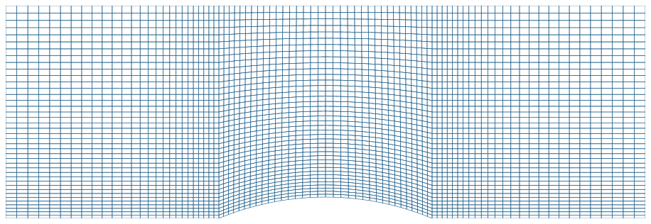
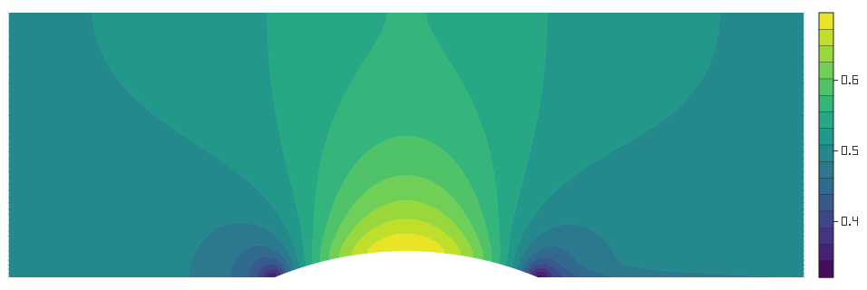

Kanal mit Kreisbogenhöcker, Unterschall
Reibungsfreie Unterschallströmung (Mach 0,5) durch einen Kanal mit einem Kreisbogenhöcker auf der unteren Wand.
Steckbrief
| Angabe | Wert |
|---|---|
| Machzahl der Zuströmung | 0,5000 |
| Reynoldszahl | – (reibungsfrei) |
| Modell | Euler-Gleichungen (reibungsfrei) |
| Netz | 3.440 Zellen |
| Zeitverfahren | Newton-Krylov (implizit) |
| Ergebnis der Rechnung | konvergiert nach 14 Schritten, relatives Residuum 2,2·10−9 |
Was der Fall zeigt
Zweck
Der Fall prüft die reibungsfreie Unterschallströmung (Mach 0,5000) durch einen Kanal mit einem Höcker an der unteren Wand: ein Kreisbogenhöcker von 10 % Höhe (der GAMM-Fall). Ohne Reibung und ohne Stoß gibt es für diese Strömung zwei Aussagen, die sich ohne Vergleichsrechnung prüfen lassen: Der Ruhedruck bleibt überall gleich, und der Wanddruck ist symmetrisch zur Höckermitte. Beides misst die Abweichung des Verfahrens von der exakten Strömung, die Diskretisierungsfehler.
Theorie des Bezugs
Ruhedruck. In einer stationären, reibungsfreien und adiabaten Strömung ohne Stoß bleibt die Entropie längs jeder Stromlinie gleich; bei gleichförmiger Zuströmung ist sie überall gleich. Dann ist auch der Ruhedruck überall der der Zuströmung:
Verglichen wird mit dem Wert 1, an der Wand (dort ist der Fehler am größten) und im Querschnitt (Volumenmittel über Bänder in x).
Symmetrie. Ein zur Mitte symmetrischer Körper hat in reibungsfreier, stoßfreier Strömung ein symmetrisches Wanddruckprofil (d'Alembert). Mit dem Druckbeiwert
Bezug ist das gespiegelte eigene Profil , verglichen im Bereich .
Rechnung aus der Literatur. Zusätzlich zeigt das vierte Diagramm die Machzahl an der Unterwand gegen eine Euler-Rechnung mit einem druckbasierten Verfahren (R89, Abb. 6), aus dem Scan der Abbildung digitalisiert (Ablesefehler rund 0,005). Sie ist eine Rechnung, keine Messung. In den Daten fehlen die Stellen, an denen sich Ober- und Unterwand im Bild kreuzen (x von 1,1 bis 1,2 und von 1,8 bis 1,9).
Was man im Bild sehen soll
Die Ergebnisansicht zeigt die Machzahl: einheitlich am Einlass, über dem Höcker ein Maximum, vor und hinter dem Höcker je ein Minimum, und das Bild ist (bis auf die Strömungsrichtung) symmetrisch zur Höckermitte. Im ersten Diagramm liegt an der Wand nahe bei 1 (größte Abweichung ), im zweiten über den Querschnitt gemittelt noch näher (). Im dritten liegen und sein Spiegelbild übereinander, bis auf eine Abweichung von höchstens .
Grenzen des Vergleichs
- Die Abweichungen sind nach der Fallbeschreibung reiner Diskretisierungsfehler: an der Wand von erster, im Querschnitt von zweiter Ordnung; sie sind keine Fehler der Theorie.
- Die Toleranzen (RMS) sind keine Genauigkeitsforderung, sondern das 1,5-fache der gemessenen RMS-Abweichung: eine Wache gegen Rückschritte, kein Literaturwert.
- Der Bezug und die Symmetrie gelten nur für Strömung ohne Stoß; der Fall ist unterkritisch (Mach 0,5000). Gas ideal mit .
Netz

Ergebnisansicht

Validierung
Der Bezug ist analytisch: der Ruhedruck bleibt überall gleich dem der Zuströmung, und der Wanddruck ist symmetrisch zur Höckermitte. Dazu kommt ein Vergleich der Machzahl an der Unterwand mit einer Rechnung aus der Literatur (R89). Die vier Diagramme zeigen der Reihe nach den Ruhedruck an der Wand, den Ruhedruck im Querschnitt, den Druckbeiwert gegen sein Spiegelbild und die Machzahl gegen die Rechnung aus der Literatur.
Kennzahlen
| Profil | Bezugspunkte | RMS-Abweichung | größte Abweichung | Toleranz (RMS) |
|---|---|---|---|---|
| p₀/p₀,∞ an der Wand | 86 | 0,00873 | 0,0207 | 0,0150 (eingehalten) |
| p₀/p₀,∞ im Querschnitt | 48 | 2,49·10−4 | 4,17·10−4 | 4,20·10−4 (eingehalten) |
| c_p an der Wand gegen gespiegelt | 34 | 0,0569 | 0,226 | 0,0940 (eingehalten) |
| Machzahl an der Wand | 42 | 0,00890 | 0,0170 | 0,0150 (eingehalten) |
| Kennzahl | gerechnet | Referenz | Abweichung |
|---|---|---|---|
| p0/p0_inf an der Wand, groesste Abweichung | 0,02066 | 0 | 0,0207 |
| p0/p0_inf im Querschnitt, groesste Abweichung | 4,173·10−4 | 0 | 4,17·10−4 |
| cp gegen gespiegelt, groesste Abweichung | 0,2263 | 0 | 0,226 |
Quellen
R89.